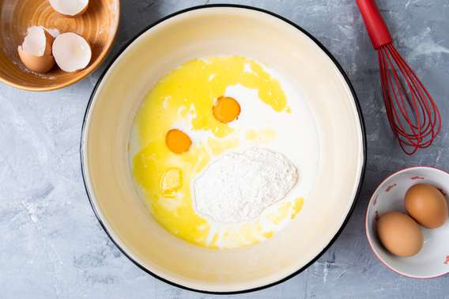
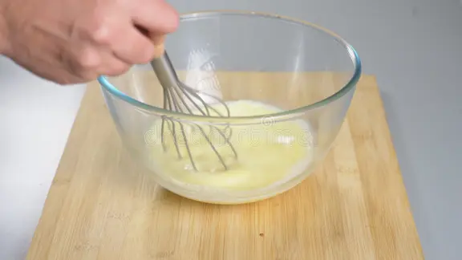
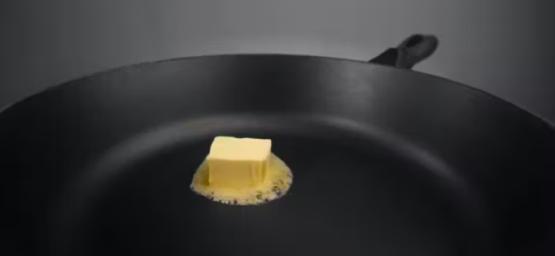
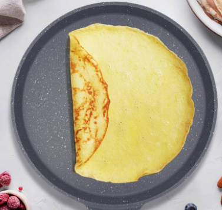
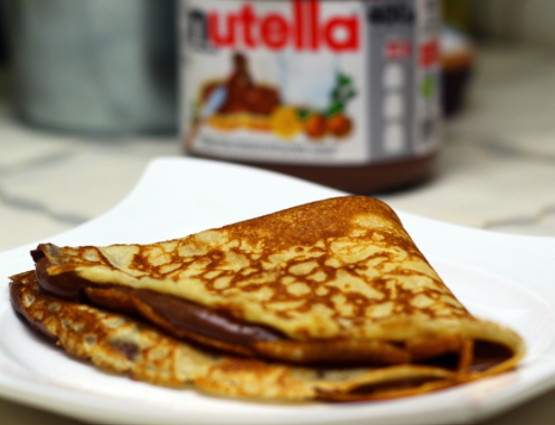

Ingredientes(Para 4 personas)
-
125 gr de harina
-
2 huevos
-
250 ml de leche
-
50 gr de mantequilla
-
5 gr de azúcar
-
1 pizca de sal
-
1 cucharadita de mantequilla para untar la sartén
Paso a Paso
-
En primer lugar juntar en un bol, o algun tipo de vaso lo siguiente: la leche, la harina, los huevos,la mantequilla, el azúcar y la sal.

-
En segundo lugar, mezclar/batir la mezcla, de tal manera y con la finalidad de que no queden grumos.

-
A continuación ponemos a calentar la sartén y echamos el poco de mantequilla en la sartén y lo exparcimos para que no se quede pegada la masa.

-
Hechamos la masa y cuando ya parezca que está empezando a ponerse "compacto" le damos la vuelta para que se haga por el otro lado, y en este momento ya podemos sacar el crepe de la sartén, y a continuación rpetimos la operación con toda la mezcla.

-
Para acabar, le ponemos en medio lo que le queramos añadir(Le podemos poner lo que sea, salado o dulce a gusto del consumidor).

-
¡Y a disfrutar!
Resultado final
El final, o una imagen como quedaria este plato sería tal que así: